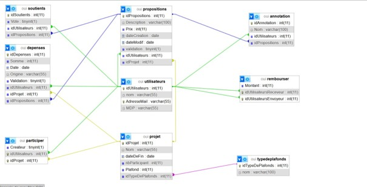
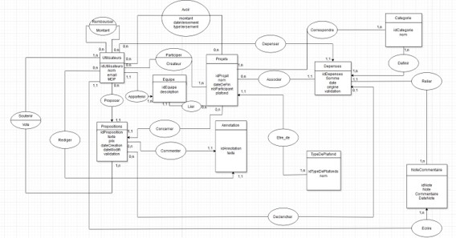
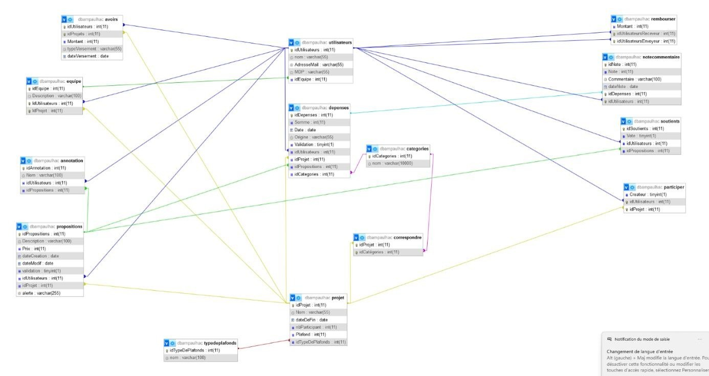

Compétences
- SQL
- Travail d’équipe
- Gestion du temps
- Organisation


5/03/2025 - 7/03/2025

16 heures

7 personnes

SQL
Dans le cadre d’une SAE, nous avons été chargés de concevoir une base de données destinée à une application de gestion de dépenses.
Ce projet avait pour objectif de modéliser, structurer et exploiter des données financières tout en respectant un cahier des charges précis.
Réalisé en groupe de sept personnes, ce projet s’est déroulé sur une durée de 16 heures et visait à nous familiariser avec les différentes étapes de conception d’une base de données relationnelle.

Le projet était divisé en deux parties.
Dans un premier temps, nous devions concevoir entièrement la base de données : réalisation du modèle conceptuel de données (MCD), du modèle logique (MLD) et du modèle physique (MPD), puis implémentation de la base et insertion des données.
Nous devions également vérifier son bon fonctionnement à l’aide de requêtes SQL.
Dans un second temps, un nouveau cahier des charges nous a été proposé, introduisant notamment un système d’équipe.
Cela nous a obligés à revoir certaines parties de notre modèle, en particulier le système de remboursement, et à adapter notre base de données en conséquence.
Nous avons commencé par concevoir le modèle conceptuel de données en travaillant tous ensemble autour d’un tableau.
Cela nous a permis d’échanger facilement sur la structure de la base avant qu’un membre du groupe ne le retranscrive en version numérique.
Ensuite, j’ai participé à la création du modèle logique de données avec une camarade.
Pendant ce temps, d’autres membres du groupe se chargeaient de définir les contraintes et de gérer les différentes exceptions liées aux données.
Nous avons ensuite transformé le modèle logique en modèle physique, puis créé la base de données.
Nous avons également mis en place des éléments complémentaires tels que des triggers et des événements afin d’assurer le bon fonctionnement et la cohérence des données.
Une partie de l’équipe s’est occupée d’insérer les données dans la base. De notre côté, nous avons réalisé un ensemble de requêtes SQL afin de tester et valider le bon fonctionnement de la base dans un temps limité.
Dans une seconde phase, nous avons repris l’ensemble du travail avec un nouveau cahier des charges intégrant un système d’équipe. Cela nous a amenés à modifier notre modèle initial, notamment le système de remboursement, puis à recréer une base adaptée aux nouvelles contraintes et à concevoir de nouvelles requêtes.
Une librairie pour développer des jeux vidéo en Python.
Un IDE Python
Outil de dessin pixel.


Ce projet a été une expérience particulièrement enrichissante en matière de travail d’équipe et de conception de bases de données. Il nous a permis de consolider nos compétences en SQL tout en nous confrontant à des contraintes de temps importantes. Il m’a également appris l’importance d’une bonne organisation et d’une communication efficace au sein d’un groupe pour mener à bien un projet complexe.